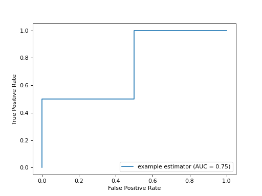
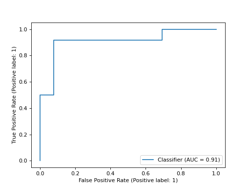

sklearn.metrics.RocCurveDisplay¶
- class sklearn.metrics.RocCurveDisplay(*, fpr, tpr, roc_auc=None, estimator_name=None, pos_label=None)[source]¶
ROC Curve visualization.
It is recommend to use
from_estimatororfrom_predictionsto create aRocCurveDisplay. All parameters are stored as attributes.Read more in the User Guide.
- Parameters:
- fprndarray
False positive rate.
- tprndarray
True positive rate.
- roc_aucfloat, default=None
Area under ROC curve. If None, the roc_auc score is not shown.
- estimator_namestr, default=None
Name of estimator. If None, the estimator name is not shown.
- pos_labelstr or int, default=None
The class considered as the positive class when computing the roc auc metrics. By default,
estimators.classes_[1]is considered as the positive class.New in version 0.24.
- Attributes:
- line_matplotlib Artist
ROC Curve.
- ax_matplotlib Axes
Axes with ROC Curve.
- figure_matplotlib Figure
Figure containing the curve.
See also
roc_curveCompute Receiver operating characteristic (ROC) curve.
RocCurveDisplay.from_estimatorPlot Receiver Operating Characteristic (ROC) curve given an estimator and some data.
RocCurveDisplay.from_predictionsPlot Receiver Operating Characteristic (ROC) curve given the true and predicted values.
roc_auc_scoreCompute the area under the ROC curve.
Examples
>>> import matplotlib.pyplot as plt >>> import numpy as np >>> from sklearn import metrics >>> y = np.array([0, 0, 1, 1]) >>> pred = np.array([0.1, 0.4, 0.35, 0.8]) >>> fpr, tpr, thresholds = metrics.roc_curve(y, pred) >>> roc_auc = metrics.auc(fpr, tpr) >>> display = metrics.RocCurveDisplay(fpr=fpr, tpr=tpr, roc_auc=roc_auc, ... estimator_name='example estimator') >>> display.plot() <...> >>> plt.show()
 Methods
from_estimator(estimator, X, y, *[, ...])Create a ROC Curve display from an estimator.
from_predictions(y_true, y_pred, *[, ...])Plot ROC curve given the true and predicted values.
plot([ax, name])Plot visualization
- classmethod from_estimator(estimator, X, y, *, sample_weight=None, drop_intermediate=True, response_method='auto', pos_label=None, name=None, ax=None, **kwargs)[source]¶
Create a ROC Curve display from an estimator.
- Parameters:
- estimatorestimator instance
Fitted classifier or a fitted
Pipelinein which the last estimator is a classifier.- X{array-like, sparse matrix} of shape (n_samples, n_features)
Input values.
- yarray-like of shape (n_samples,)
Target values.
- sample_weightarray-like of shape (n_samples,), default=None
Sample weights.
- drop_intermediatebool, default=True
Whether to drop some suboptimal thresholds which would not appear on a plotted ROC curve. This is useful in order to create lighter ROC curves.
- response_method{‘predict_proba’, ‘decision_function’, ‘auto’} default=’auto’
Specifies whether to use predict_proba or decision_function as the target response. If set to ‘auto’, predict_proba is tried first and if it does not exist decision_function is tried next.
- pos_labelstr or int, default=None
The class considered as the positive class when computing the roc auc metrics. By default,
estimators.classes_[1]is considered as the positive class.- namestr, default=None
Name of ROC Curve for labeling. If
None, use the name of the estimator.- axmatplotlib axes, default=None
Axes object to plot on. If
None, a new figure and axes is created.- **kwargsdict
Keyword arguments to be passed to matplotlib’s
plot.
- Returns:
- display
RocCurveDisplay The ROC Curve display.
- display
See also
roc_curveCompute Receiver operating characteristic (ROC) curve.
RocCurveDisplay.from_predictionsROC Curve visualization given the probabilities of scores of a classifier.
roc_auc_scoreCompute the area under the ROC curve.
Examples
>>> import matplotlib.pyplot as plt >>> from sklearn.datasets import make_classification >>> from sklearn.metrics import RocCurveDisplay >>> from sklearn.model_selection import train_test_split >>> from sklearn.svm import SVC >>> X, y = make_classification(random_state=0) >>> X_train, X_test, y_train, y_test = train_test_split( ... X, y, random_state=0) >>> clf = SVC(random_state=0).fit(X_train, y_train) >>> RocCurveDisplay.from_estimator( ... clf, X_test, y_test) <...> >>> plt.show()

- classmethod from_predictions(y_true, y_pred, *, sample_weight=None, drop_intermediate=True, pos_label=None, name=None, ax=None, **kwargs)[source]¶
Plot ROC curve given the true and predicted values.
Read more in the User Guide.
New in version 1.0.
- Parameters:
- y_truearray-like of shape (n_samples,)
True labels.
- y_predarray-like of shape (n_samples,)
Target scores, can either be probability estimates of the positive class, confidence values, or non-thresholded measure of decisions (as returned by “decision_function” on some classifiers).
- sample_weightarray-like of shape (n_samples,), default=None
Sample weights.
- drop_intermediatebool, default=True
Whether to drop some suboptimal thresholds which would not appear on a plotted ROC curve. This is useful in order to create lighter ROC curves.
- pos_labelstr or int, default=None
The label of the positive class. When
pos_label=None, ify_trueis in {-1, 1} or {0, 1},pos_labelis set to 1, otherwise an error will be raised.- namestr, default=None
Name of ROC curve for labeling. If
None, name will be set to"Classifier".- axmatplotlib axes, default=None
Axes object to plot on. If
None, a new figure and axes is created.- **kwargsdict
Additional keywords arguments passed to matplotlib
plotfunction.
- Returns:
- display
RocCurveDisplay Object that stores computed values.
- display
See also
roc_curveCompute Receiver operating characteristic (ROC) curve.
RocCurveDisplay.from_estimatorROC Curve visualization given an estimator and some data.
roc_auc_scoreCompute the area under the ROC curve.
Examples
>>> import matplotlib.pyplot as plt >>> from sklearn.datasets import make_classification >>> from sklearn.metrics import RocCurveDisplay >>> from sklearn.model_selection import train_test_split >>> from sklearn.svm import SVC >>> X, y = make_classification(random_state=0) >>> X_train, X_test, y_train, y_test = train_test_split( ... X, y, random_state=0) >>> clf = SVC(random_state=0).fit(X_train, y_train) >>> y_pred = clf.decision_function(X_test) >>> RocCurveDisplay.from_predictions( ... y_test, y_pred) <...> >>> plt.show()

- plot(ax=None, *, name=None, **kwargs)[source]¶
Plot visualization
Extra keyword arguments will be passed to matplotlib’s
plot.- Parameters:
- axmatplotlib axes, default=None
Axes object to plot on. If
None, a new figure and axes is created.- namestr, default=None
Name of ROC Curve for labeling. If
None, useestimator_nameif notNone, otherwise no labeling is shown.
- Returns:
- display
RocCurveDisplay Object that stores computed values.
- display